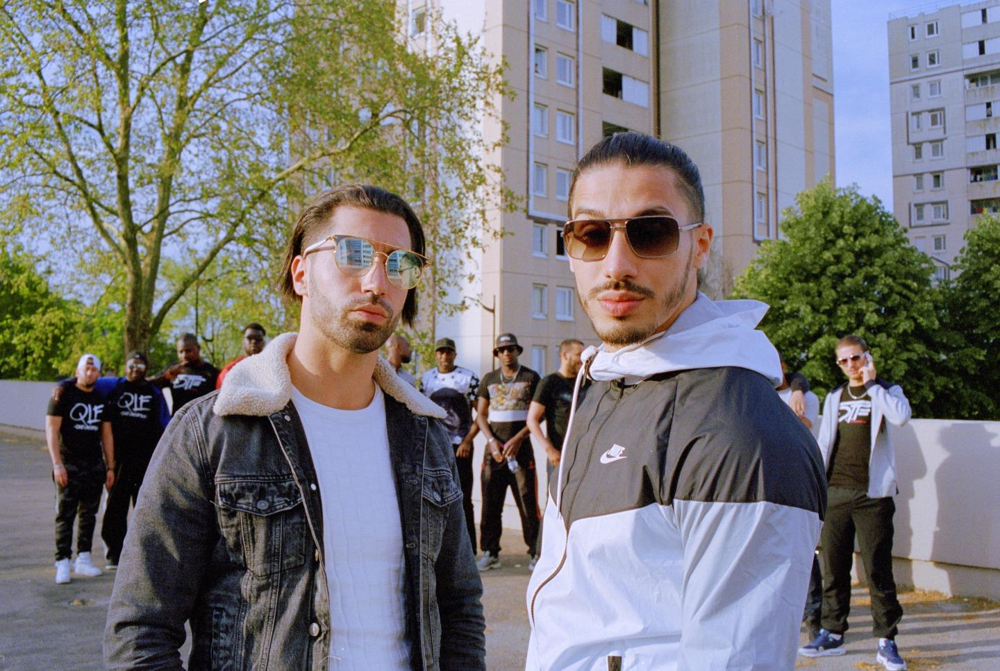

PNL / HISTOIRE
Deux frères, une vision, une ascension hors du commun.

Originaires des Tarterêts, à Corbeil-Essonnes, Ademo et N.O.S construisent un univers musical unique, entre mélancolie, ambition et fraternité. Après des débuts en solo, les deux frères unissent leurs forces pour former PNL.
Les débuts du phénomène PNL, avec notamment le titre Le monde ou rien.
Le duo se révèle au grand public et impose progressivement son identité musicale.
PNL confirme son succès et devient incontournable dans le rap français.
Le duo atteint une nouvelle dimension avec un album marquant et le clip Au DD, tourné sur la tour Eiffel.
UNE IDENTITÉ UNIQUE
Sans maison de disques traditionnelle, PNL impose sa propre vision, ses codes et son univers artistique. Une réussite construite autour de la famille et de la liberté créative.